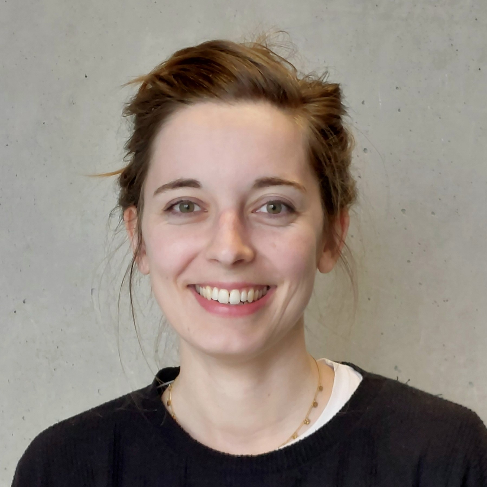

Developing and designing workshops for thousands of particiants, from ground school children up to adults and train-the-trainer. Diverse task field, including: Writing project proposals, designing training material design and workshops, science event planning, giving talks in context of science-communication, geoinformatics and other STEM-related topics.
Investigating skills needs in the space downstream sector. International working groups, involved in curriculum development, training material development and ESCO profile refinement.
Three semesters of tutoring and one semester of teaching this university course. Besides theoretical knowledge, this course is complemented with practical execises with real-world case studies, including data acquisition, image calibration, landcover classification and analysis of examples like glacier melt, wildfires and floods.
Besides assistance in project work (femMAD - Female Engagement in Making), I designed an interactive Maker Scavenger Hunt for children, to conduct a small study focussing on gender differences in making.
Over the past few years, I have created and taught a variety of STEM workshops for children and young adults. Experiences include instructing Connected Kids (tablet and digital literacy, still ongoing) and Energy Kids (teaching renewable energy concepts). Since then, I have designed multiple original workshops, often incorporating gamification to make learning playful, hands-on, and memorable.
Paris Lodron University of Salzburg | 2023 – Present (expected 2026)
Currently completing my master’s thesis, focused on Urban Heat Islands.
Paris Lodron University of Salzburg | 2018 – 2023
Award-winning project in the Ideas Competition: “Mobility as User Experience and Public Transport on Waterways.”
Contribution (workshop development) to the winning project “Energy Kids.”
From trailrunning to multi-day bikepacking to climbing the Großglockner by bike; I am driven by curiosity and find great joy in discovering new things and going on adventures.
Designing immersive narrative experiences is not only part of my work; I enjoy entertainment by storytelling and creating immersive, individualized experiences.
Workshops, teaching, storytelling, gamification
ArcGIS Pro/online, QGIS, GEE, eCognition, Leaflet
Python, R, JavaScript
SQL basics / HTML, CSS
Affinity & Canva, visual design & cartography